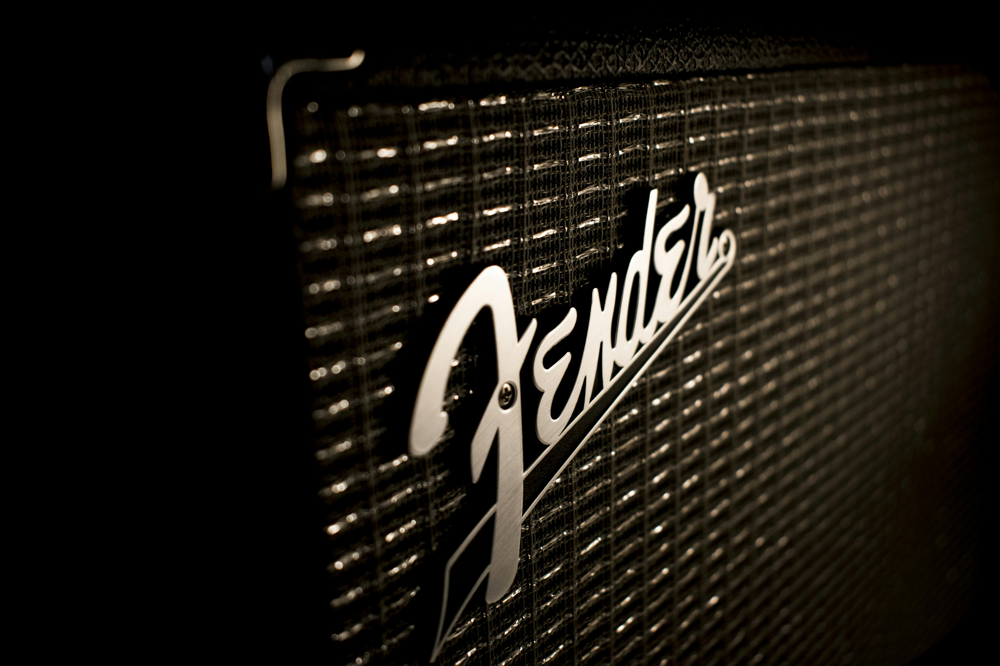

Geschichte des E-Bass: Das Fundament der modernen Musik
Die Geschichte des E-Bass ist eine faszinierende Reise durch die
moderne Musikgeschichte. Als direkter Nachfolger des Kontrabasses
revolutionierte der elektrische Bass in den 1950er Jahren die Art
und Weise, wie Musik gespielt und produziert wurde.
Der Kontrabass: Der Vorläufer
Bevor es den E-Bass gab, war der Kontrabass das Fundament von Jazz,
Blues und früher Rockmusik. Doch das große, sperrige Instrument war
schwer zu transportieren, teuer und musste verstärkt werden, um in
lauten Bandkonstellationen mithalten zu können. Zudem war die
Intonation aufgrund der bundlosen Bauweise eine Herausforderung für
viele Musiker.
Die Erfindung des E-Bass: Leo Fender's Revolution
In den 1950er Jahren entwickelte Leo Fender den
ersten serienmäßig hergestellten elektrischen Bass: den
Fender Precision Bass (1951). Der Name "Precision"
(deutsch: Präzision) bezog sich darauf, dass durch die Bünde eine
präzise Intonation möglich war – im Gegensatz zum bundlosen
Kontrabass. Dieses kompakte, bundierte Instrument war leicht zu
transportieren, konnte problemlos verstärkt werden und war
wesentlich günstiger als ein Kontrabass.
1960 folgte der Fender Jazz Bass, der mit zwei
Tonabnehmern und einem schlankeren Hals mehr klangliche Flexibilität
bot. Diese beiden Modelle legten den Grundstein für nahezu alle
modernen E-Bässe.
Der E-Bass in Rock, Funk und Jazz
Der E-Bass wurde schnell zum unverzichtbaren Fundament jeder Band.
In den 1960er und 70er Jahren prägten Bassisten wie
Paul McCartney (The Beatles),
James Jamerson (Motown) und
Jaco Pastorius (Weather Report) den Sound ihrer
Zeit. Neue Spieltechniken wie Slapping, Popping und Tapping
entstanden und machten den Bass von einem reinen Begleitinstrument
zum Soloinstrument.
Im Funk revolutionierte Larry Graham mit seinem
perkussiven Slap-Stil das Instrument. Im Progressive Rock zeigten
Musiker wie Chris Squire (Yes) und
Geddy Lee (Rush), dass der Bass melodisch und
virtuos sein kann.
Moderne Entwicklungen
Heute gibt es E-Bässe mit vier, fünf, sechs oder sogar mehr Saiten.
Aktive Elektronik mit integrierten Vorverstärkern ermöglicht präzise
Klangregelung direkt am Instrument. Fretless-Bässe (bundlose Bässe)
bieten einen warmen, singenden Ton, der an den Kontrabass erinnert.
Moderne Bassisten nutzen Effektpedale, Looper, digitale Verstärker
und innovative Spielweisen, um immer neue Sounds zu kreieren. Der
Bass ist aus keiner Band wegzudenken – ob in Rock, Pop, Jazz, Funk,
Metal, Hip-Hop oder elektronischer Musik.
Ikonen am E-Bass: Berühmte Bassisten
Ob Jazz, Rock oder Funk – diese Bassistinnen und Bassisten zeigen,
wie vielfältig das Fundament einer Band klingen kann. Ihre
Innovationen, Virtuosität und Leidenschaft haben ganze Generationen
inspiriert.
Jaco Pastorius (1951-1987)
Der in Florida geborene Jaco Pastorius wechselte nach einer
Handverletzung vom Schlagzeug zum Bass und stieg mit Anfang zwanzig
bei Weather Report ein. Mit singenden Flageoletts, Walking Lines und
Improvisationen auf Weltniveau machte er den Fretless-Bass zum
Soloinstrument – inklusive des legendären Fender Jazz Bass, dem er
eigenhändig die Bundstäbe zog und dessen Griffbrett er mit
Epoxidharz versiegelte. Sein Debutalbum "Jaco Pastorius" (1976) gilt
bis heute als Meilenstein der Bassgeschichte. Trotz seines
tragischen Todes mit nur 35 Jahren bleibt sein Einfluss ungebrochen.
Hör dir seinen Klassiker „Portrait of Tracy" an:

Flea (geb. 1962)
Michael „Flea" Balzary zog als Kind von Australien nach Los Angeles,
wo ihn sein jazzspielender Stiefvater musikalisch prägte. Mit seinem
Schulfreund Anthony Kiedis gründete er die Red Hot Chili Peppers,
deren energiegeladener Mix aus Funk, Punk und Rock ihn weltweit
bekannt machte. Sein aggressiver Slap-Stil und melodisches Spiel
definieren den Sound der Band. Daneben engagiert er sich mit dem
Silverlake Music Conservatory für musikalischen Nachwuchs,
unterrichtet selbst und steht immer wieder als Schauspieler vor der
Kamera. Flea ist bekannt für seine energetischen Live-Performances,
bei denen er oft barfuß und shirtless auf der Bühne steht.
Hörprobe: Red Hot Chili Peppers live bei „Give It Away"
Marcus Miller (geb. 1959)
Marcus Miller wuchs in Brooklyn in einer Musikerfamilie auf und war
bereits mit 15 Jahren als Studioprofi gefragt. Als Komponist,
Produzent und Multiinstrumentalist schrieb er u. a. den
Titeltrack für Miles Davis' Album „Tutu", gewann mehrere Grammys und
kombiniert bis heute Funk, Jazz und Soul mit eigener Klarinette oder
programmierten Synth-Sounds. Sein charakteristischer Slap-Sound und
seine melodischen Soli machten ihn zu einem der gefragtesten
Session-Bassisten der 1980er Jahre. Er spielte mit Luther Vandross,
Herbie Hancock und unzähligen anderen Jazz- und Pop-Größen.
Sein Groove in „Detroit" live erleben:
Paul McCartney (geb. 1942)
Paul McCartney aus Liverpool prägte mit melodischen Basslinien den
Sound der Beatles, nachdem er das Instrument notgedrungen übernahm,
als ihr ursprünglicher Bassist Stuart Sutcliffe die Band verließ.
McCartneys Basslinien sind oft ebenso einprägsam wie die Melodien
selbst – Songs wie "Come Together", "Penny Lane" oder "Something"
sind perfekte Beispiele für seinen melodischen Ansatz. Nach der Band
gründete er Wings, schrieb unzählige Hits, komponierte
Orchesterwerke und engagiert sich bis heute für Tierschutz und
Bildung. Sein bevorzugtes Instrument war der Höfner 500/1 "Violin
Bass", dessen charakteristischer Sound untrennbar mit dem frühen
Beatles-Sound verbunden ist.
Legendärer Höfner-Sound in „Paperback Writer":
Carol Kaye (geb. 1935)
Carol Kaye begann als Jazz-Gitarristin in Los Angeles und avancierte
als Mitglied der legendären „Wrecking Crew" zur meistgebuchten
Studiobassistin der 1960er Jahre. Sie spielte auf Tausenden von
Aufnahmen, darunter Hits von den Beach Boys ("Good Vibrations"), den
Monkees, Simon & Garfunkel und vielen mehr. Sie bevorzugte Plektren
für ihren präzisen Attack und entwickelte einen charakteristischen,
perkussiven Stil. Carol Kaye veröffentlichte einflussreiche
Lehrmaterialien und brach als Frau in der männerdominierten
Studiowelt der 1960er Jahre wichtige Barrieren. Ihre Basslinien sind
auf mehr Chart-Hits zu hören als die fast aller anderen Bassisten.
Studiomagie bei „Good Vibrations":
Berühmte Basslines & Grooves zum Lernen
Hier sind einige legendäre Basslinien, die sich hervorragend für den
Einstieg eignen. Wir haben dir die besten Anfänger-Versionen auf
Ultimate Guitar verlinkt – eine fantastische Ressource zum Üben.
| Song |
Künstler |
Warum er sich lohnt |
Link |
| Another One Bites the Dust |
Queen |
Der Klassiker! Eine der bekanntesten Basslinien überhaupt.
Perfekt für Anfänger, um Timing und Groove zu entwickeln.
|
|
| Come Together |
The Beatles |
Paul McCartneys ikonische Basslinie – rhythmisch, funky und
ein Muss für jeden Bassisten.
|
|
| Money |
Pink Floyd |
Ein ungewöhnlicher 7/4-Takt macht diesen Song zur perfekten
Übung für komplexe Rhythmen.
|
|
| Billie Jean |
Michael Jackson |
Diese hypnotische Basslinie von Louis Johnson ist einfach zu
lernen, aber extrem effektiv.
|
|
| Stand By Me |
Ben E. King |
Eine wunderschöne, melodische Basslinie, die zeigt, dass der
Bass auch emotional berühren kann.
|
|
Ausrüstung: Dein Weg zum perfekten Bass-Sound
Die Welt der Bass-Ausrüstung ist riesig, aber keine Sorge! Hier ist
der ultimative Guide für alles, was du am Anfang wissen musst und
worauf du achten solltest.
1. Bass-Typen: 4-Saiter, 5-Saiter & mehr
4-saitige Bässe (Standard):
Der klassische E-Bass hat vier Saiten, die in E-A-D-G gestimmt
werden. Dies ist der Standard für die meisten Musikstile und perfekt
für Anfänger. Die meisten legendären Basslinien wurden auf einem
4-Saiter gespielt.

-
Precision Bass (P-Bass): Der Klassiker von
Fender. Mit einem Split-Coil-Tonabnehmer liefert er einen warmen,
druckvollen Sound. Perfekt für Rock, Pop, Punk und Alternative.
-
Jazz Bass (J-Bass): Ebenfalls von Fender, mit
zwei Single-Coil-Tonabnehmern. Vielseitiger Sound, der von tief
und warm bis hell und knackig reicht. Beliebt im Funk, Jazz und
R&B.
-
Music Man StingRay: Mit aktivem Humbucker und
kräftiger 3-Band-EQ. Bekannt für seinen perkussiven Slap-Sound.
5- und 6-saitige Bässe:
Für erweiterten Tonumfang gibt es Bässe mit mehr Saiten. Ein
5-Saiter hat meist eine tiefe B-Saite (B-E-A-D-G), perfekt für
moderne Metal-, Hip-Hop- und Pop-Produktionen. 6-Saiter fügen oft
noch eine hohe C-Saite hinzu und sind bei Solisten beliebt.
Fretless-Bässe (bundlos):
Ohne Bünde klingen diese Bässe warm, singend und kontrabassähnlich.
Sie erfordern präzise Intonation, belohnen aber mit einem
einzigartig expressiven Klang. Jaco Pastorius machte sie berühmt.
2. Verstärker & Boxen: Die Stimme deines Bass
Ein Bass-Verstärker ist speziell für die tiefen Frequenzen des Bass
ausgelegt. Normale Gitarren-Amps können durch die tiefen Töne
beschädigt werden!

-
Combo-Amps: Verstärker und Lautsprecher in einem
Gehäuse. Kompakt und praktisch für Übung und kleine Gigs. Ideal
für Anfänger. (z.B. Fender Rumble Serie, Ampeg BA-Serie)
-
Stacks (Head + Cabinet): Verstärkerkopf und
separate Lautsprecherbox(en). Flexibler und kraftvoller, aber
schwerer. Perfekt für große Bühnen und wenn mehr Power gebraucht
wird.
-
Röhren vs. Transistor: Röhren-Amps liefern
warmen, vintage Sound, sind aber schwer und teuer. Transistor-Amps
(Solid-State) sind zuverlässig, günstig und wartungsfrei. Moderne
Class-D-Amps sind leicht, kraftvoll und energieeffizient.
-
Übungsamps: Kleine Amps (10-30 Watt) mit
Kopfhöreranschluss für zuhause. Oft mit integrierten Effekten und
AUX-Eingang zum Mitspielen mit Musik.
3. Effektpedale: Klangfarben für den Bass
Auch wenn der Bass oft "clean" gespielt wird, gibt es tolle Effekte,
die deinen Sound bereichern können.

-
Kompressor: Der wichtigste Effekt für viele
Bassisten. Er gleicht Lautstärkeunterschiede aus, macht den Sound
voller und lässt Noten länger klingen. Unverzichtbar für Slap und
Funk.
-
Overdrive/Distortion: Fügt Sättigung und Biss
hinzu. Von dezenter Wärme bis zu aggressivem Rock/Metal-Sound.
Beliebt: Darkglass Electronics, SansAmp Bass Driver.
-
Chorus: Macht den Bass breiter und "fetter"
klingen. Verleiht dem Sound Tiefe und Bewegung.
-
Octaver: Fügt eine tiefere Oktave hinzu (oder
höher). Erzeugt synth-ähnliche Sounds oder macht den Bass noch
massiver.
-
Envelope Filter (Auto-Wah): Der Funk-Effekt!
Erzeugt das typische "wah-wah"-Quaken, das auf vielen
70er-Funk-Platten zu hören ist.
4. Kabel, Saiten & Zubehör: Die stillen Helden
Kabel: Investiere in ein anständiges
Instrumentenkabel. Billige Kabel sind anfällig für Störgeräusche und
gehen schnell kaputt. Ein hochwertiges Kabel sorgt für saubere
Signalübertragung.

Saiten: Bassaiten gibt es in verschiedenen
Materialien und Stärken:
-
Roundwound: Standardsaiten mit geriffelter
Oberfläche. Heller, brillanter Klang. Am vielseitigsten.
-
Flatwound: Glatte Oberfläche, warmer, dumpfer
Vintage-Sound. Beliebt im Jazz und Motown.
-
Saitenstärke: Leichtere Saiten sind einfacher zu
spielen, schwerere haben mehr Sustain und Druck.
Stimmgerät: Absolutes MUSS! Ein verstimmter Bass
klingt schrecklich. Clip-Tuner oder Pedaltuner sind ideal.
Gurt: Ein guter, breiter Bassgurt entlastet
Schulter und Rücken, besonders bei längeren Sessions.
Gigbag/Koffer: Schützt deinen Bass beim Transport.
Ein Gigbag ist leichter, ein Hardcase bietet besseren Schutz.